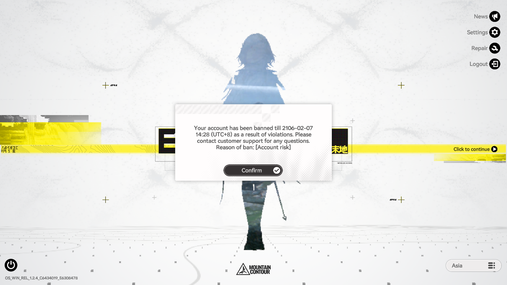

Last Updated: June 18, 2026
Current Status: Unresolved
This report was compiled using information from the public post, along with additional statements obtained from the player during a personal inquiry.
Case 180626
1. Account & Incident Overview

Brief Chronology: The account has been actively maintained with daily logins since its creation. On May 15, 2026, a standard gameplay session occurred starting shortly before 09:35:13 (UTC+8) and lasting for approximately three hours. The ban was discovered upon attempting to log in later that afternoon.
Player's Stated Reason for False Positive: The account has been played consistently and exclusively by the original owner since launch, adhering strictly to the Terms of Service. No unauthorized software, automation tools, or account modifications have ever been utilized on any device associated with this account.
2. Technical Environment & Usage Habits
- Monetization Status: No purchases made.
- Network Environment: Alternated between two residential home internet connections and mobile data. No VPN usage while playing.
- Platforms Used: PC and Mobile. BlueStacks emulator was used for approximately two brief sessions during the first month of release. The software was subsequently deleted, and gameplay was restricted exclusively to native PC and mobile clients thereafter.
Self-Audit Checklist (Verified Negative for the following):
- No cheats, mods, trainers, or macros.
- No account sharing, selling, or trading.
- No simultaneous multi-device logins.
- No VPN routing during gameplay.
- No multi-accounting or rerolling behavior.
- No credential entry on suspicious or third-party sites.
- No software-tampering applications present on active devices.
3. Appeal Action Log
1: Standard Appeals (Helpshift Chat & Contact Form)
- Attempts: >3
- Result: Received the identical automated macro response for all attempts.
“Hello Endministrator! Regarding your inquiry about your account being suspended, our relevant team has confirmed that the system detected risks associated with your account, leading to its suspension. Given the significant risks associated with such an account, we are currently unable to process appeals for account restoration. If you wish to play the game with a new account, we recommend registering and binding a personal account through official channels. This will ensure account security and help prevent similar issues. Regards, Arknights: Endfield Customer Support Team”
2: Direct Email Escalation
- Target: endfield_cs@gryphline.com
- Attempts: 1
- Result: No response received.
3: Notice of Personal Dispute Resolution
- Target: privacy@gryphline.com
- Date Sent: May 22, 2026
- Result: No response received.
4: Formal Request for Data Access
- Target: privacy@gryphline.com
- Dates Sent: June 4, 2026
- Details: Follow-Up on 6 June 2026 via Helpshift Chat. Successfully passed the account ownership verification questionnaire requested by support.
- Result: No further communication received since passing verification.
5: Physical Mail
- Target: Gryphline Office Address
- Result: No response received.
4. Evidence Submitted During Appeals
The following documentation was provided to support during the appeal processes:
- Screenshots covering account in-game Currency History, and Email Claim History.
- Screenshots of Gryphline account data and SKPort account ownership showing the linked Endfield protocol terminal.
- Country/Region and exact Date of Registration.
- Last successful login and logout time.
- Hardware Specifications.
5. Potential False-Flag Triggers (Hypothesis)
The player has considered the possibility that the suspension may have been influenced by one or more of the following:
- The historical use of the BlueStacks emulator during the game's launch window.
- Switching between two distinct residential networks and a mobile data carrier. This theory is speculative, however, given that other users with greater network fluctuations or VPNs have not faced similar account actions.
- Utilizing two separate devices (PC and Mobile) to play, potentially triggering a rapid-handshake or concurrent-login security flag during a narrow time frame.
6. Additional Notes
None
← Back to Case Archive